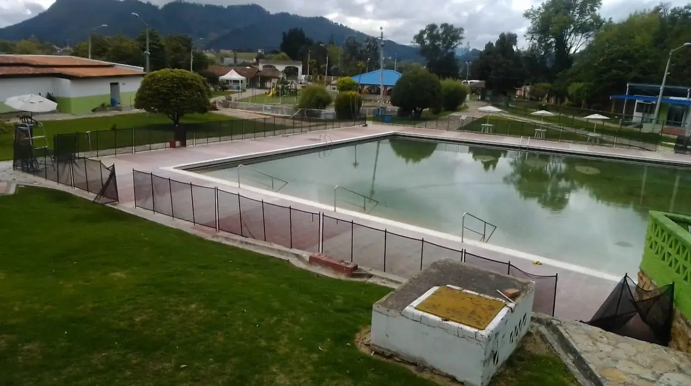
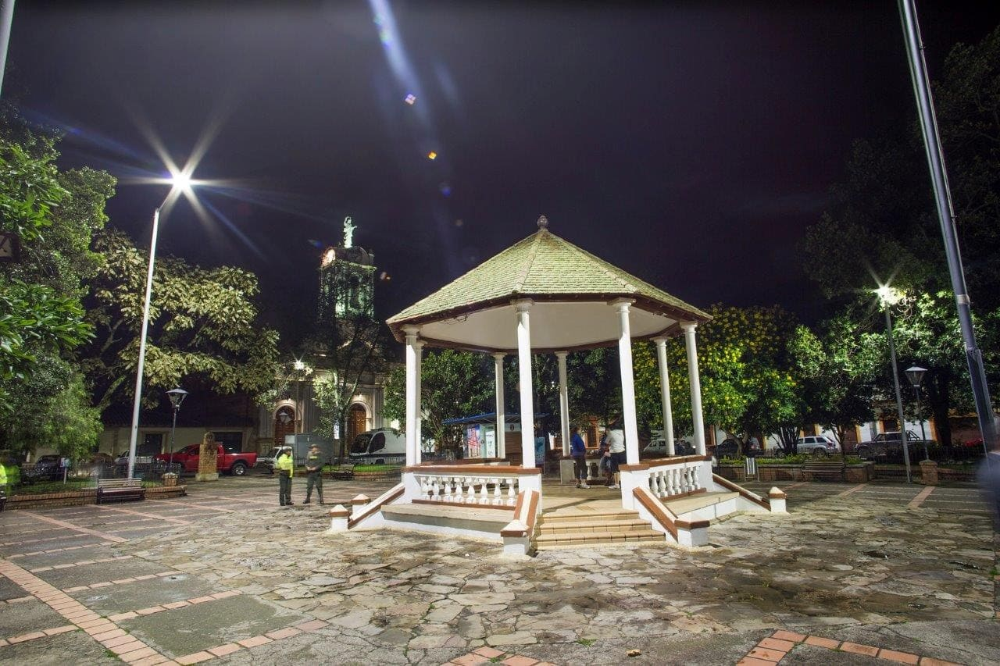
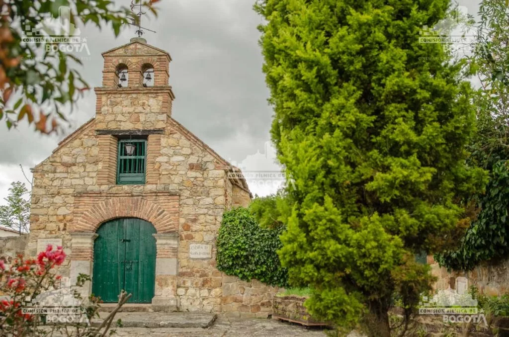
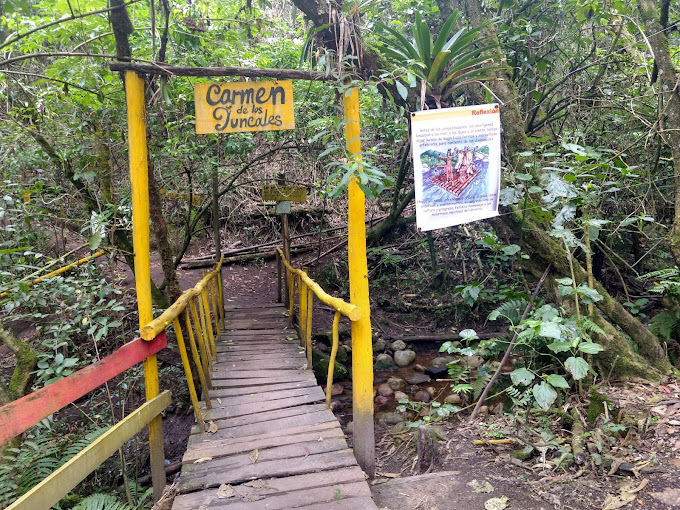
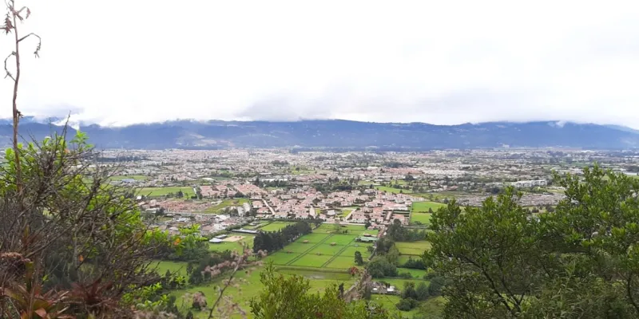
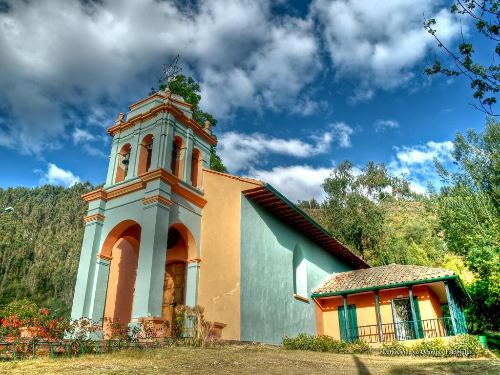
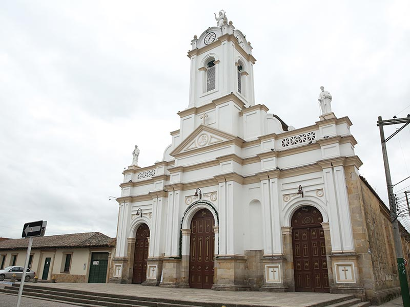
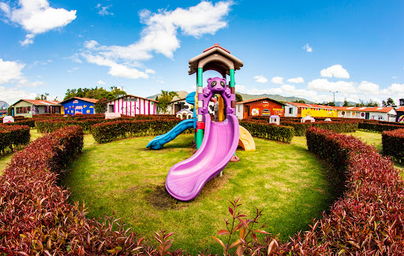

Termales de Tabio

Un lugar perfecto para relajarse en aguas termales naturales. Los Termales de Tabio son conocidos por sus propiedades medicinales y rejuvenecedoras, brindando una experiencia de descanso rodeada de naturaleza.
Parque Principal de Tabio

El corazón de Tabio, este parque es un espacio lleno de vida y cultura. Con jardines bien cuidados, zonas verdes y áreas para sentarse, es el lugar ideal para compartir y disfrutar del ambiente local.
Iglesia Santa Barbara

Una iglesia con encanto colonial que destaca por su arquitectura sencilla pero hermosa. Este templo es un sitio de oración y celebración para los habitantes de Tabio y visitantes.
Parque los juncales

Un hermoso parque natural donde se pueden admirar juncos y otras especies de plantas autóctonas. Es ideal para caminar y disfrutar de la tranquilidad de la naturaleza local.
Jardín botánico Tabio
Un espacio dedicado a la conservación de la flora local. El Jardín Botánico de Tabio permite a los visitantes explorar diversas especies de plantas y aprender sobre la biodiversidad de la región.
Mirador de la cumbre

Desde este mirador, se puede disfrutar de vistas panorámicas impresionantes de Tabio y sus alrededores. Es un lugar perfecto para conectar con la naturaleza y capturar la belleza de los paisajes.
Peña de Juaica
Conocida como un lugar místico, la Peña de Juaica es ideal para los aventureros. Este sitio es popular por sus leyendas, sus rutas de senderismo y las vistas espectaculares desde su cima.
Capilla de Nuestra Señora De Lourdes

Una capilla pequeña y acogedora dedicada a la Virgen de Lourdes. Es un lugar de tranquilidad y devoción, perfecto para quienes buscan un momento de reflexión y paz espiritual.
Iglesia principal Inmaculada Concepción

Un majestuoso templo en el centro de Tabio, la Iglesia Inmaculada Concepción destaca por su arquitectura y por ser un punto de referencia histórico y cultural del municipio.
Faunaticos

Un centro educativo y recreativo donde los visitantes pueden aprender sobre la fauna local y la conservación. Es perfecto para familias y personas interesadas en la vida silvestre de la región.